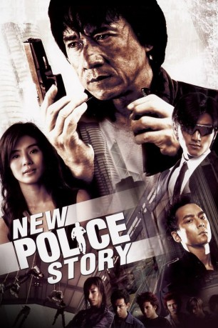
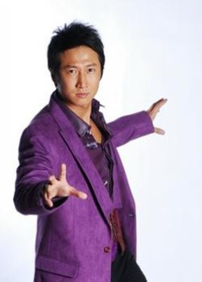

#1881 New Police Story
 
 IMDB-Wertung: 7.0 / 10
IMDB-Wertung: 7.0 / 10  Metascore: 0
Metascore: 0 
Inspektor Wing ist ein höchst dekorierter und angesehener Polizist der Hongkonger Polizei. Eine lebende Legende, der Beste der Besten, der, der die härtesten Fälle knackt. Sein neuester Fall: Eine skrupellose Gangsterbande von Jugendlichen hat es auf alle Cops der Stadt abgesehen. Als Wings Truppe bei einem Einsatz der Gang komplett zum Opfer fällt und nur Wing selbst knapp mit dem Leben davon kommt, verliert er jeden Glauben an sich selbst. Er beantragt bei seinem Vorgesetzten ein Jahr Urlaub, um sich von dem Schock zu erholen. Doch er driftet immer mehr in Melancholie und Alkohol ab. Nach einer durchzechten Nacht wacht er in dem Haus von Frank Zheng auf. Frank hat wie auch Wing bei dem Einsatz einen Verwandten verloren und kann Wing überreden, die Jugendbande ein weiteres Mal ins Kreuzfeuer zu nehmen.
Jahr: 2004
Dauer: 123 Minuten
FSK: 16
Land: Hong-Kong Studio: 3L FilmverleihTonspuren: DTS - ,
Untertitel:
Auflösung: 1080p (1920x832) Größe: 12697 MB
Genre: Action, Thriller, Drama, Krimi
Regisseur: Benny Chan
Drehbuch: Alan Yuen
Soundtrack: Tommy Wai
Darsteller:
 Jackie Chan als Senior Insp. Chan Kwok-Wing
Jackie Chan als Senior Insp. Chan Kwok-Wing Nicholas Tse als Zheng Xiaofeng / Frank Cheng Siu-fung
Nicholas Tse als Zheng Xiaofeng / Frank Cheng Siu-fung Charlie Yeung als Sun Ho Yee
Charlie Yeung als Sun Ho Yee Daniel Wu als Joe Kwan
Daniel Wu als Joe Kwan Terence Yin als Fire
Terence Yin als Fire Andy On als Tin Tin Law
Andy On als Tin Tin Law Kai Chi Liu als Commander Tai
Kai Chi Liu als Commander Tai- Charlene Choi als Sa Sa
 Rongguang Yu als Commander Chiu
Rongguang Yu als Commander Chiu Tony Ka Fai Leung als Chui's Team Member
Tony Ka Fai Leung als Chui's Team Member- Mak Bau als Negotiator
- Tak-Bun Wong als Robber
- Winnie Leung als Female hostage
- Wai-Leung Kwok als Male hostage
- Deep Ng als Rocky, Wing's team member
 Ken Lo als Kwong, Wing's team member
Ken Lo als Kwong, Wing's team member Tony Ho als Chui, Wing's team member
Tony Ho als Chui, Wing's team member-  Timmy Hung als Tin Ming - Wing's team member
- Tin Chiu Hung als Chiu - Wing's team member
- Carl Ng als Carl, Wing's team member
 Andrew Lin als Hoi, Wing's team member
Andrew Lin als Hoi, Wing's team member- Samuel Pang als Sam, Wing's team member
- Philip Ng als Phillip, Wing's team member
- John Sham als Eric Chow
- Hsim Sau Kwan als Reporter
- Asuka Higuchi als Kwong's Wife
- Mandy Chiang als Chui's girlfriend
- Koey Wong als Tin Ming's girlfriend
- Alva Chun als Hoi's girlfriend
- Coco Chiang als Sue Chow
- Lau Yi Tai als Bank manager
- Hiro Hayama als Max Leung
- Dave Wong als Sam Wong
- Tseung Huk als Policeman
- Mason Chun als Policeman
- Stephen Choi als Policeman
- Alex Lee als Policeman
- Roderick Lam als Sam Wong's assistant
- Joyce Lau als Funeral attendee
- Fanny Yeung als Funeral Attendee
- Ada To als Funeral attendee
- Liu Jia als Jazz Bar Saxophone Player
- Audio Traffic als Jazz Bar Band
- Kenny Kwan als Red Hair
- Steven Cheung als Green Hair
- Yoki Man als Woman with bad snatched
- Ting-Chi Ip als Policewoman
- Hoi Pik Wong als Policewoman
- Agnes Pang als Policewoman
- Sandy Leung als Policewoman
Datei: X:\HD-Eastern-Collections\Jackie Chan\Police Story\New Police Story (2004, FSK16, 1920x832).mkv seit 30.08.2015
Festplatte: HD Eastern+Western
 Es gibt insgesamt 58 Filme in der Gruppe 'HD-Eastern-Collections\Jackie Chan'
Es gibt insgesamt 58 Filme in der Gruppe 'HD-Eastern-Collections\Jackie Chan'